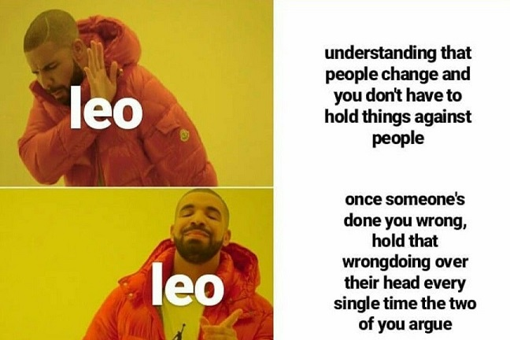

Symbol:The Lion
Element:Fire
Quality:Fixed
Keyword:"I will"
Ruling Planet:Sun
Strengths:Creative, humorous, hard willed, cheerful
Weakness:Stubborn, Lazy, Selfish, Arrogant
People born under the sign of leo are noted for their prideful and courageous personality. They are strong willed people who achieve success in
almost every task they take on. They might have superiority complex over others but its just the way they do things…This sign has the capacity
to unite different types of people under one banner and also due to their fairly good sense of humour.
Leos tend to be warm hearted and cheerful in life, wanting to experience almost every adventure and challenges that life has to offer as leo is
element of fire. Being aware of their needs and desires they can easily ask for things but unconsciously forget about the feelings or needs of
others and thus seem self-centered. They are driven by the desire to be loved and respected by people. They have big egos and dare you say
anything to hurt their egos and they will pounce upon you and rip you to shreds. Mind it they do not think before acting and hence you need to
be extra careful.

Leos are loyal to the core and are always there behind to help out their loved ones in trouble. They are quite straightforward in their life and
if you are ever in the need of advice, be assured to get straight answers to your question. Their words may seem harsh but in the perspective of
reality you will realize their words are definitely worth it.
Leos are passionate in all pursuits, including relationships, and take it upon themselves to be the best partner. They love grand gestures, and
they want to show the world how attentive and caring they can be. They also can't resist flashiness and often buy their partner the biggest
and best presents. Leo is an adventurer, seeking to balance an intense life of social obligations and travel with plenty of downtime to relax
and luxuriate. Work and outward appearances matter to this sign, and they're willing to do whatever it takes to gain a job title or
workplace status, even if it means temporarily sacrificing their precious leisure time.